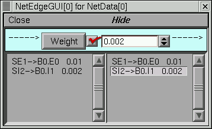

Ball-Stick model cell with distal excitation and proximal inhibition. This is another "hello world" level exercise. It shows how to use the a specification from a cell builder to create a network ready cell (spike initiation site and a set of synapses) from a NetReadyCellGUI. It shows how to use these cell types in a NetGUI to make connections between spike initiation sites and synapses.
From the CellBuild Management/CellType panel, the classname should be declared as "BallStick" and the output variable which is watched for spike event should be soma.v(1). At this point the windows should look something like this.
This starts a NetReadyCellGUI window (nrc) and a SynTypeGUI window. (It would have also started a new CellBuild window as well if no CellBuild type had been selected in the dialog). Note that the nrc contains a drawing of the cell topology. At this time you can close the CellBuild window --- It can always be re-created with the nrc's Info menu. In fact, when saving the nrc in a session, it is best to first close both the cell builder and the SynTypeGUI to avoid saving duplicate copies in the session file. After closing the CellBuild[0] window the interface should look something like this.
From the SynTypeGUI window, create a "E" synapse type via a New/ExpSyn followed by a Rename. Since the reversal potential for the standard ExpSyn is 0 mV, it is already excitatory. However, change the time constant from 0.1 to 2 ms.
In the same SynTypeGUI window create a "I" synapse type via a New/ExpSyn followed by a Rename. Set the reversal potential "e" to -80 mV so that it will be inhibitory and set tau to 5ms.
In the NetReadyCellGUI, press the Refresh button so that the
new SynTypes appear.
Change the cell name to "B" so the label won't take up so much space later
on when we use it in a NetGUI tool.
In the NetReadyCellGUI, press the "Locate" radiobutton and drag an E to location .8 on the dendrite. Then drag an I to location .1 on the dendrite. The label in the canvas will show whether the synapse type is close enough to be attached or not. Each synapse on the cell is given an index which is the order of creation. Several synapses can be attached to the same location. The synapse label can be dragged up to two font sizes above or below the location to avoid label overlap. If a label is dragged too far away from the cell it will become detached and the larger synapse indices will be reduced by 1. The interface at this point should look something like this. Enough work has been done up to this point so that you should save the NetReadyCellGUI in a session by itself (without the CellBuild or SynTypeGUI windows -- these may safely be closed as well).
This cell type is now ready for use in the NetGUI.
At this point I created a Window Group called "cell types", placed the ArtCellGUI and NetReadyCellGUI in it, and saved the group. In case things go wrong I can easily return to this point.
Connect SI1 to I1 of B0
The NetGUI window should now look something like this.
Use the "Weights" button to pop up a NetEdgeGUI panel and enter the
following weights.

oc>topology()
|-| acell_home_(0-1)
|-| B_BallStick[0].soma(0-1)
`------| B_BallStick[0].dend(0-1)
1
oc>
Press the "SpikePlot" button to pop up a plot window.
Start a NEURONMainMenu/Tools/RunControl and VariableStepControl. Set TStop to 500 and invoke "Use variable dt"
Get a voltage style graph window and plot the soma voltage for the ball-stick cell. The ShowCellMap button on the NetGUI is useful here. The relevant interface looks something like this
Do an Init&Run.
The relevant windows should now look something like this.
Plot the value of the conductance and current of the inhibitory synapse.
The hoc file for the above spec looks like this.
{kind=link}
{kind=link}
{kind=link}
{kind=link}
{kind=link}
{kind=link}
{kind=link}